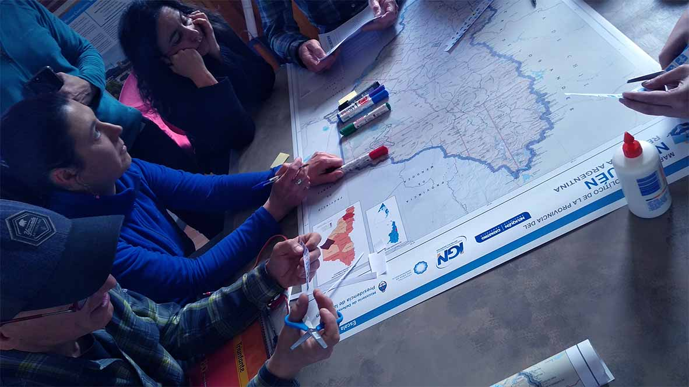

Proyecto institucional que busca recuperar al mapa como herrramienta de conocimiento y análisis del territorio en el aula.
El equipo se compone de personal técnico, investigadores, docentes pertenecientes a:

Se utilizan técnicas de cartografía participativa (CP). Entendemos a la misma como un proceso de construcción de mapas donde se combina el conocimiento local con información y tecnología geográfica para crear mayor entendimiento de las relaciones entre una comunidad y su territorio 2 3.
La propuesta de la actividad se basa en el interrogante: ¿qué sabes del lugar donde habitas? La misma apunta a identificar en el mapa:
Se trabajó a escala provincial: identificación de amenazas; a escala local: identificación de amenazas, vulnerabilidad social y niveles de riesgo.
La cartografía participativa (CP) es una línea de investigación de reciente incorporación en el IGN. En este caso en particular se aplica como una herramienta de trabajo en el aula, con el fin de introducir a las nuevas generaciones en el conocimiento del territorio y los problemas ambientales a partir del uso de cartografía digital y papel.
Las y los docentes lograron manifestar espacialmente cómo perciben el riesgo de desastres en el área de estudio a escalas diversas, e incorporaron herramientas y conocimientos suficientes para trasladar la experiencia a sus estudiantes en las aulas.
Se confeccionaron mapas de riesgo a nivel provincial en donde se identificaron amenazas vinculadas con contaminación, riesgo sísmico y vulcanológico. A su vez, se realizaron mapas a nivel local de la ciudad de Neuquén, donde se identificaron amenazas, líneas vitales e instalaciones críticas, población con sus características y síntesis de Riesgo.
La cartografía participativa (CP) es una línea de investigación de reciente incorporación en el IGN. En este caso en particular se aplica como una herramienta de trabajo en el aula, con el fin de introducir a las nuevas generaciones en el conocimiento del territorio y los problemas ambientales a partir del uso de cartografía digital y papel.
Asimismo, desde el IGN nos acercamos a la CP con el objetivo de acompañar el proceso de producción y publicación de la información resultante de diversas experiencias de mapeos participativos, y en un futuro comenzar a pensar de qué manera estos productos podrían fortalecer,
complementar y enriquecer la información geoespacial oficial.